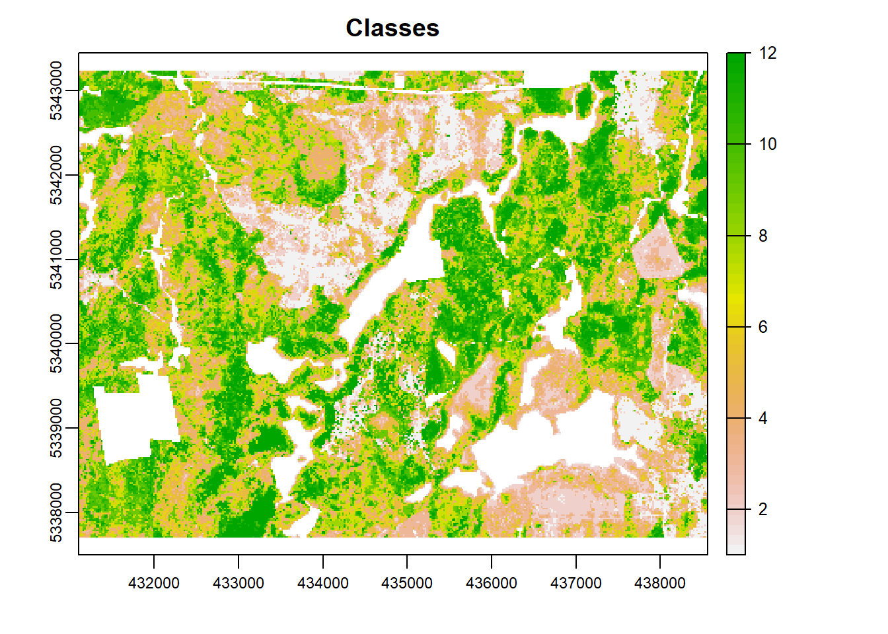
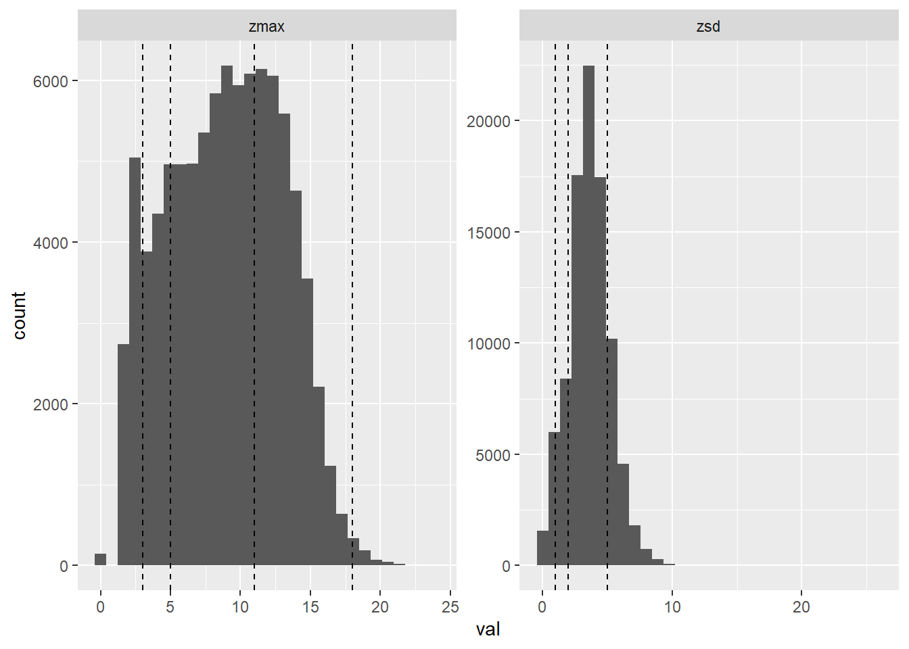
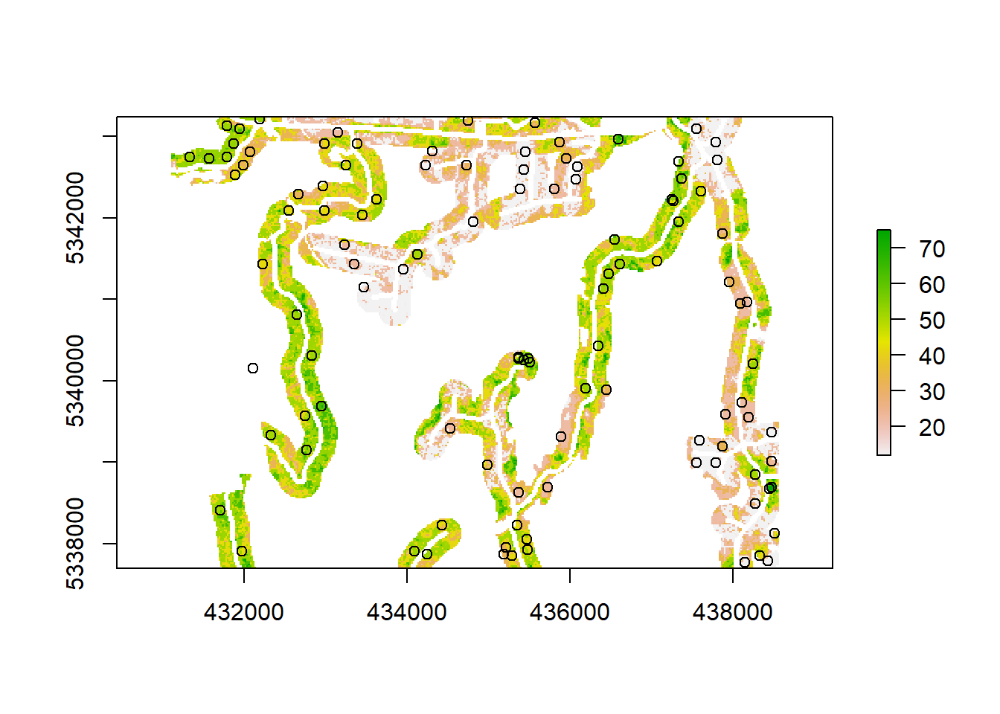
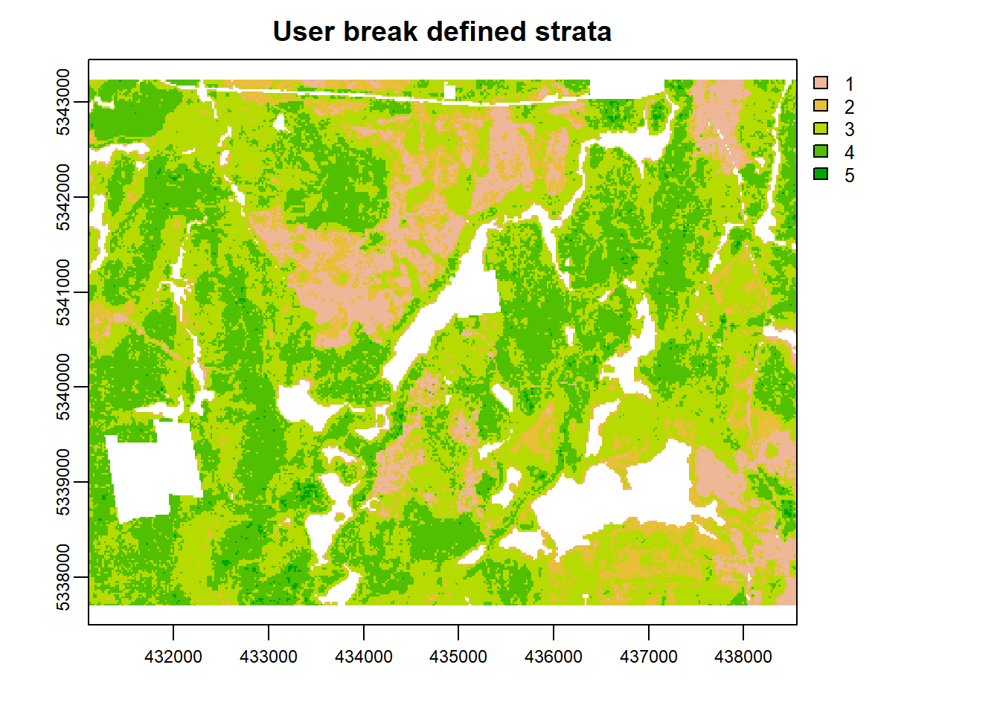
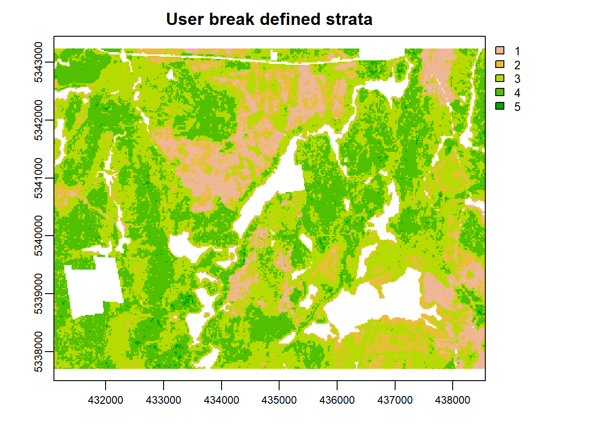
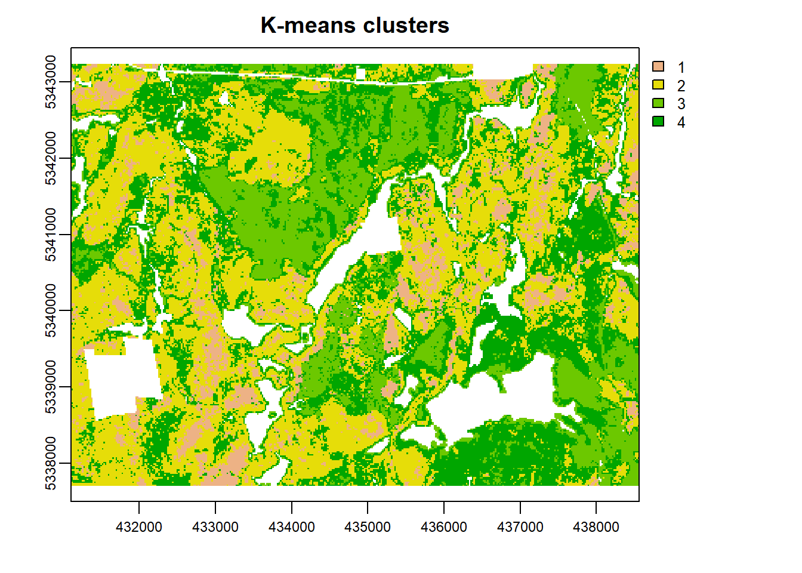
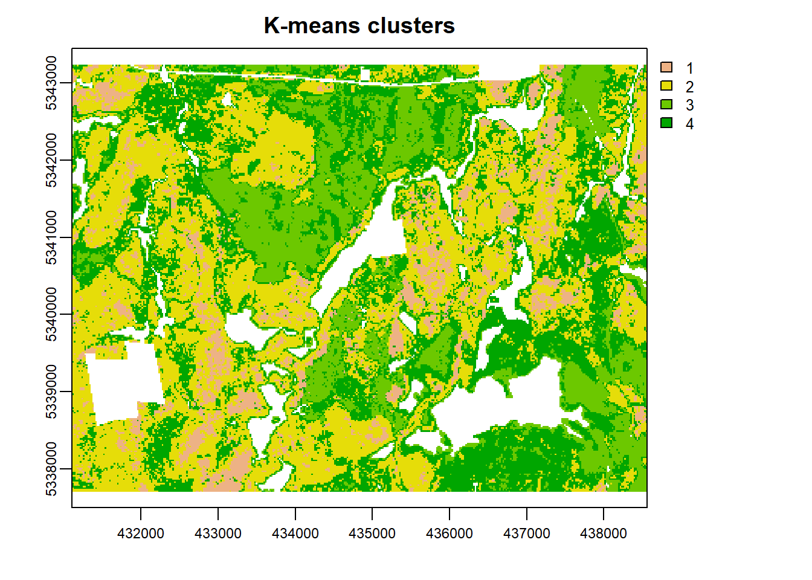
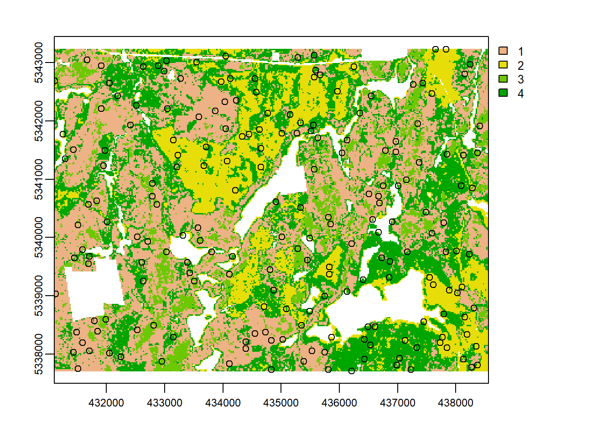
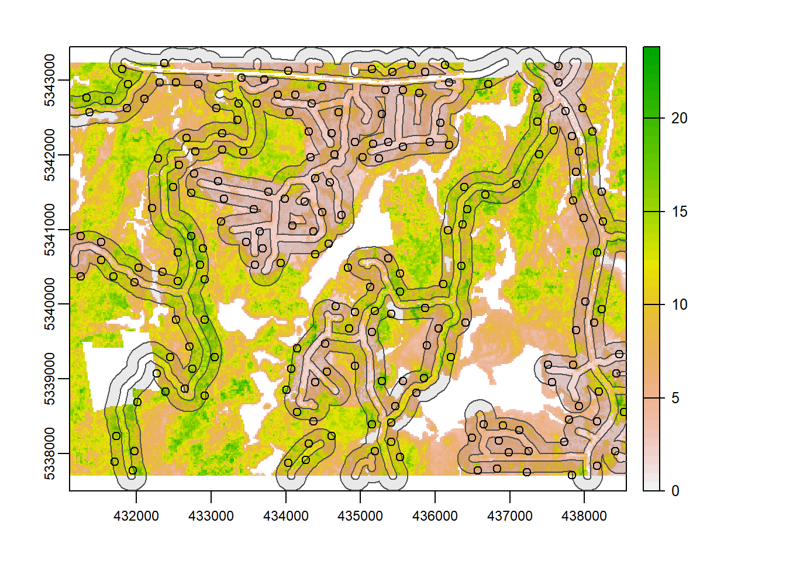

strat_* functions
Fundamental to many structurally guided sampling approaches is the use of stratification methods that allow for more effective and representative sampling protocols. Below I define the stratification methods that are included thus far in sgsR and provide some worked examples for each.
A total of 5 strat functions currently exist in the package:
strat_kmeans- kmeans stratificationstrat_pcomp- principal component stratificationstrat_breaks- user-defined break stratificationstrat_quantiles- quantile stratificationstrat_osb- optimum sample boundary stratification
strat_kmeans
We provide a preliminary example of the strat_kmeans algorithm to prepare our sraster input data but here are a few more.
#--- perform stratification using k-means ---#
strat_kmeans(mraster = mraster, # input
nStrata = 5) # algorithm will produce 4 strata## class : SpatRaster
## dimensions : 277, 373, 1 (nrow, ncol, nlyr)
## resolution : 20, 20 (x, y)
## extent : 431100, 438560, 5337700, 5343240 (xmin, xmax, ymin, ymax)
## coord. ref. : +proj=utm +zone=17 +ellps=GRS80 +towgs84=0,0,0,0,0,0,0 +units=m +no_defs
## source : memory
## name : strata
## min value : 1
## max value : 5Plot
Notice that nothing plotted… That’s because plot = FALSE is the default for all functions in sgsR. See examples below where plot = TRUE.
strat_kmeans(mraster = mraster, # input
nStrata = 10, # algorithm will produce 10 strata
iter = 1000, # set minimum number of interations to determine kmeans centers
algorithm = "MacQueen", # use MacQueen algorithm
plot = TRUE, # plot output
details = TRUE) # output details - kmeans stratification data and output sraster
## $details
## K-means clustering with 10 clusters of sizes 8460, 8175, 14401, 7390, 9868, 10001, 7523, 3621, 12801, 8955
##
## Cluster means:
## zmax zmean zsd pzabove2 zq20 zq50 zq70 zq90 zq95
## 1 -1.61845760 -2.21644419 -1.63846390 -0.99047251 -1.1864738 -1.50396615 -1.6459599 -1.8468352 -1.9020831
## 2 -1.18115418 -0.21578917 -1.08949828 -0.75875943 -0.9150003 -1.13205186 -1.2044319 -1.2349361 -1.1929623
## 3 0.26583212 0.56153588 0.07272645 0.21463824 0.2881727 0.27517550 0.2418837 0.2056615 0.2189552
## 4 1.39721946 0.62354818 0.34114940 1.80773962 1.7801397 1.35336933 1.1818874 0.9664822 0.8654981
## 5 0.01721191 0.01098153 0.83805005 -0.56628465 -0.5185618 -0.04843908 0.2166482 0.4737554 0.5242885
## 6 0.79331356 0.77058735 -0.19524776 1.43253552 1.1557104 0.73536980 0.5871320 0.4388289 0.4221690
## 7 -0.94287627 -1.41892604 -0.28918661 -0.86547692 -0.9795565 -1.00411311 -0.9013863 -0.6156040 -0.5435200
## 8 1.76150865 0.69261341 1.83496281 0.75707447 1.2237326 1.80930765 1.9196920 1.7151428 1.5461441
## 9 -0.52954681 0.28400209 -0.29233160 -0.47235346 -0.5335791 -0.54493965 -0.5043006 -0.4021585 -0.3306150
## 10 0.95859014 0.50659987 1.35742129 -0.08826613 0.3952886 1.01793988 1.0976238 1.1301770 1.0744401
## l_1 l_2 t_3 t_4
## 1 -0.1781397 -1.18860515 -0.3617194 -2.20193918
## 2 2.2901169 -1.10283325 -0.3604030 -0.10722060
## 3 -0.4672981 0.84913943 -0.3165150 0.53656536
## 4 -0.8835024 0.29909510 0.3395034 0.50972172
## 5 0.1305378 0.04956952 -0.2194533 0.02085024
## 6 -0.8717392 1.79501743 -0.2659370 0.72264588
## 7 0.1293558 -0.98909181 -0.3531697 -1.39820377
## 8 -0.5843340 -0.40512452 4.0847632 0.67617048
## 9 0.6143076 -0.45100988 -0.3565298 0.34255658
## 10 -0.3625802 0.09744738 0.5930486 0.47607905
##
## Clustering vector:
## [1] 9 7 5 3 7 9 5 9 3 3 3 4 10 10 8 8 8 4 6 4 4 10 10 10 3 10 5 5 10 5 4 3 5 10 4
## [36] 5 1 5 10 4 10 4 10 10 4 4 10 4 4 10 4 4 10 4 10 2 2 5 5 3 3 3 3 5 3 1 7 2 2 2
## [71] 2 2 2 2 2 2 2 2 2 2 2 2 1 2 2 2 2 2 2 2 2 2 9 7 5 9 2 9 2 2 2 2 2 2 2
## [106] 2 2 1 1 1 1 1 1 1 1 1 1 1 1 2 2 2 2 2 2 2 2 2 7 1 1 2 2 2 2 2 2 2 2 2
## [141] 2 1 2 2 1 2 2 2 2 2 2 2 2 2 2 2 2 2 2 2 2 2 2 2 7 5 5 5 10 8 8 10 5 10 3
## [176] 5 9 9 5 9 9 9 9 9 9 2 9 9 9 7 9 9 9 9 9 2 9 9 5 6 6 6 6 6 5 6 6 6 6 6
## [211] 5 10 3 3 5 3 3 3 3 5 3 10 5 5 2 7 7 6 6 6 6 3 3 3 9 2 2 2 2 7 7 3 5 6 3
## [246] 4 4 8 4 4 6 3 4 6 4 3 6 6 8 6 4 10 3 8 4 8 8 10 5 10 10 8 8 8 10 2 1 1 1 1
## [281] 1 2 7 5 5 5 7 1 1 1 1 1 1 1 1 1 1 1 1 1 1 7 7 9 9 9 6 6 6 3 6 6 4 6 6
## [316] 10 5 3 4 5 5 10 5 8 5 3 7 7 7 9 7 5 9 3 4 10 10 4 4 4 4 4 4 6 6 4 10 10 10 10
## [351] 10 5 10 10 4 3 10 10 5 3 3 3 3 7 1 4 10 4 10 4 10 4 10 10 4 10 10 4 4 5 9 3 3 5 3
## [386] 3 3 3 3 7 2 2 2 2 2 2 2 2 2 2 2 2 2 2 2 2 2 2 2 2 2 2 2 2 2 2 2 9 2 2
## [421] 9 2 2 2 2 2 7 5 5 5 5 2 7 1 1 1 1 1 1 1 1 1 1 1 2 2 2 2 2 2 2 2 2 7 2
## [456] 1 2 2 2 2 1 2 2 2 9 2 2 2 1 1 2 1 1 2 2 2 2 2 2 2 2 2 2 2 2 2 2 2 2 9
## [491] 5 5 5 10 5 10 10 10 10 3 9 9 5 5 5 5 7 7 9 9 7 7 7 5 9 9 9 9 2 9 3 5 5 4 6
## [526] 3 3 6 6 6 6 6 3 6 6 5 10 5 3 3 9 3 3 6 10 4 10 5 5 9 3 9 9 9 3 3 5 2 3 3
## [561] 9 2 2 2 7 5 3 7 4 4 5 4 3 6 6 3 4 4 7 6 6 6 3 10 10 8 8 7 5 8 10 10 4 4 10
## [596] 8 8 10 5 1 1 1 2 2 2 2 2 5 7 1 1 1 1 1 7 1 1 1 1 1 1 1 1 1 7 9 9 9 3 6
## [631] 6 4 3 6 4 3 6 6 10 10 5 5 3 5 4 5 8 9 3 3 9 5 9 9 9 5 4 4 4 4 4 4 10 4 6
## [666] 6 6 6 4 10 10 10 3 10 5 5 6 10 10 5 10 10 4 3 3 9 3 5 7 1 1 1 5 10 10 4 10 10 10 10
## [701] 8 4 8 5 5 4 4 6 3 3 3 3 7 9 2 2 2 2 2 2 2 2 2 2 2 2 2 2 2 2 2 2 2 2 2
## [736] 2 2 2 2 2 2 2 2 2 2 2 2 2 5 9 2 2 2 9 9 2 1 1 1 1 1 1 1 7 1 1 2 2 2 2
## [771] 2 2 2 2 2 2 2 2 2 1 1 1 1 1 2 2 2 2 2 2 2 1 1 1 1 1 2 2 2 2 2 2 2 2 2
## [806] 2 2 2 2 2 2 7 5 5 5 10 8 8 10 10 10 10 9 9 9 5 5 5 5 7 1 7 9 9 7 7 7 7 2 9
## [841] 9 9 9 9 3 3 10 4 8 5 6 6 6 6 6 6 3 10 5 3 3 3 3 5 9 9 5 10 10 4 4 10 5 9 9
## [876] 9 9 2 9 3 2 7 3 9 9 7 1 1 1 1 7 7 3 3 6 3 6 6 6 6 6 6 6 6 6 6 3 10 10 8
## [911] 8 9 7 8 8 10 10 10 8 8 8 2 2 1 1 1 1 2 2 2 2 1 1 7 1 1 1 7 1 1 1 1 1 1 1
## [946] 1 1 1 7 9 9 9 5 3 3 6 3 4 4 4 3 3 3 5 5 5 5 5 5 5 5 5 9 3 10 3 9 3 3 5
## [981] 6 6 4 4 10 10 4 4 4 6 6 6 6 10 10 4 4 10 10 5
## [ reached getOption("max.print") -- omitted 90195 entries ]
##
## Within cluster sum of squares by cluster:
## [1] 12158.85 17930.08 20050.11 18795.73 21479.44 13944.26 19130.48 25280.81 20918.38 26772.76
## (between_SS / total_SS = 83.4 %)
##
## Available components:
##
## [1] "cluster" "centers" "totss" "withinss" "tot.withinss" "betweenss" "size"
## [8] "iter" "ifault"
##
## $raster
## class : SpatRaster
## dimensions : 277, 373, 1 (nrow, ncol, nlyr)
## resolution : 20, 20 (x, y)
## extent : 431100, 438560, 5337700, 5343240 (xmin, xmax, ymin, ymax)
## coord. ref. : +proj=utm +zone=17 +ellps=GRS80 +towgs84=0,0,0,0,0,0,0 +units=m +no_defs
## source : memory
## name : strata
## min value : 1
## max value : 10strat_kmeans(mraster = mraster, # input
nStrata = 5, # algorithm will produce 4 strata
center = FALSE, # do not center data
scale = FALSE, # do not scale data
plot = TRUE, # plot output
filename = tempfile(fileext = ".tif"), # write output sraster to file
overwrite = TRUE) # overwrite file on disc if it exists
## class : SpatRaster
## dimensions : 277, 373, 1 (nrow, ncol, nlyr)
## resolution : 20, 20 (x, y)
## extent : 431100, 438560, 5337700, 5343240 (xmin, xmax, ymin, ymax)
## coord. ref. : +proj=utm +zone=17 +ellps=GRS80 +towgs84=0,0,0,0,0,0,0 +units=m +no_defs
## source : memory
## name : strata
## min value : 1
## max value : 5strat_pcomp
The strat_pcomp algorithm calculates principal components on the input mraster then divides data into equal sized strata. Strata can be defined by using the primary (PC1) only (nStrata), or primary & secondary (PC2 - nStata2) principal components. If nStata2 is defined, PC2 is used and the total number of strata will be \[nStrata * nStrata2\].
#--- perform stratification using principal components ---#
strat_pcomp(mraster = mraster, # input
nStrata = 5, # 5 strata with primary PC only
plot = TRUE) # plot
## class : SpatRaster
## dimensions : 277, 373, 1 (nrow, ncol, nlyr)
## resolution : 20, 20 (x, y)
## extent : 431100, 438560, 5337700, 5343240 (xmin, xmax, ymin, ymax)
## coord. ref. : +proj=utm +zone=17 +ellps=GRS80 +towgs84=0,0,0,0,0,0,0 +units=m +no_defs
## source : memory
## name : strata
## min value : 1
## max value : 5strat_pcomp(mraster = mraster, # input
nStrata = 4, # 4 strata with primary
nStrata2 = 4, # 4 strata with secondary PC - will produce 16 output strata
plot = TRUE, # plot
details = TRUE) # produce output details
## $details
## Standard deviations (1, .., p=13):
## [1] 2.93647150 1.26882709 1.15691535 0.86852611 0.53076565 0.42304219 0.35679023 0.21988261 0.14290118
## [10] 0.09666573 0.07179753 0.05016994 0.02570635
##
## Rotation (n x k) = (13 x 13):
## PC1 PC2 PC3 PC4 PC5 PC6 PC7 PC8
## zmax 0.3359531 0.01817295 -0.085980156 0.04883369 -0.16446975 0.134888577 -0.15339832 0.0308922302
## zmean 0.2692352 -0.14320556 0.484261417 0.08715503 0.10021008 0.208524587 0.28510651 -0.0021690322
## zsd 0.2525172 0.46307645 0.056280928 -0.35189237 -0.05790180 -0.047159024 -0.05015151 0.1340537231
## pzabove2 0.2575694 -0.38512031 -0.153689213 0.33477151 -0.20262484 -0.504470621 0.11141535 0.5392526124
## zq20 0.2957809 -0.25072438 -0.163557453 0.28595035 -0.26718846 -0.008654979 -0.08550919 -0.6885132239
## zq50 0.3271212 0.02248762 -0.100221327 0.07934796 -0.16569646 0.420247325 -0.29668394 0.0329045573
## zq70 0.3296060 0.11882609 -0.062083857 -0.02690735 -0.12986291 0.271021251 -0.22963234 0.3370366252
## zq90 0.3192555 0.21122345 0.009465806 -0.18799597 -0.09477864 -0.264930469 0.08153534 -0.0006831206
## zq95 0.3091490 0.21445676 0.055153306 -0.23449020 -0.07471056 -0.451270472 0.21011887 -0.3114508486
## l_1 -0.1885162 0.18294540 0.614448790 0.27802959 -0.27135857 -0.287232900 -0.56400277 -0.0188834161
## l_2 0.2327722 -0.43278499 0.060836142 -0.34982009 0.57978716 -0.188355371 -0.50772612 -0.0466621166
## t_3 0.1690462 0.45853939 -0.166263397 0.60467076 0.59765870 -0.091199035 -0.03067072 -0.0310296725
## t_4 0.2561467 -0.13145011 0.527861021 0.09849843 0.14573821 0.177036168 0.32336804 0.0324261270
## PC9 PC10 PC11 PC12 PC13
## zmax -1.886049e-02 0.0560186614 -0.1278804649 -0.0052115172 0.8873685582
## zmean 2.826642e-02 0.0270039439 0.0675442390 -0.7236917619 -0.0162558333
## zsd 3.445926e-01 -0.0513256272 0.6681251318 0.0295065391 0.0098559868
## pzabove2 -2.020873e-02 0.0120286554 0.2179924264 -0.0004334086 -0.0531021769
## zq20 3.627060e-01 -0.1271545992 0.1378591128 0.0390001016 -0.1416169733
## zq50 -5.353496e-01 0.4057583148 0.2063460374 0.0609622299 -0.2923086818
## zq70 1.490613e-01 -0.5945209546 -0.4103363124 -0.0257022931 -0.2670379822
## zq90 3.087370e-01 0.5970060214 -0.4980350813 -0.0047718481 -0.1800345902
## zq95 -5.847183e-01 -0.3194796103 -0.0758389467 -0.0171556239 -0.0045593830
## l_1 -2.142108e-02 0.0060754571 -0.0313981609 -0.0077753523 0.0029767582
## l_2 2.094108e-02 0.0009527472 0.0201177308 -0.0003045197 -0.0008875782
## t_3 7.516919e-05 -0.0011560670 0.0009191501 -0.0216941448 -0.0022824635
## t_4 3.474720e-02 -0.0238296876 -0.0055552525 0.6845626123 0.0117767342
##
## $raster
## class : SpatRaster
## dimensions : 277, 373, 1 (nrow, ncol, nlyr)
## resolution : 20, 20 (x, y)
## extent : 431100, 438560, 5337700, 5343240 (xmin, xmax, ymin, ymax)
## coord. ref. : +proj=utm +zone=17 +ellps=GRS80 +towgs84=0,0,0,0,0,0,0 +units=m +no_defs
## source : memory
## name : strata
## min value : 1
## max value : 16
##
## $plot
strat_pcomp(mraster = mraster, # input
nStrata = 3, # 3 strata with primary PC
nStrata2 = 3, # 4 strata with secondary PC - will produce 9 output strata
filename = tempfile(fileext = ".tif")) # write output sraster to file## class : SpatRaster
## dimensions : 277, 373, 1 (nrow, ncol, nlyr)
## resolution : 20, 20 (x, y)
## extent : 431100, 438560, 5337700, 5343240 (xmin, xmax, ymin, ymax)
## coord. ref. : +proj=utm +zone=17 +ellps=GRS80 +towgs84=0,0,0,0,0,0,0 +units=m +no_defs
## source : memory
## name : strata
## min value : 1
## max value : 9strat_breaks
The strat_breaks function stratifies data based on user-defined breaks in covariates. A single metric can be defined or an additional metric2 can be supplied. breaks and breaks2 correspond to the user-defined breaks for metric and metric2 respectively.
#--- define vector breaks ---#
br.max <- c(3, 5, 11, 18) #zmax breaks
br.sd <- c(1, 2, 5) #zsd breaksOnce the breaks have been created we can input them into the function using the breaks and breaks2 parameters.
#--- perform stratification using breaks ---#
strat_breaks(mraster = mraster, # input
metric = "zmax", # covariate of interest - numeric index or character string
breaks = br.max, # breaks for primary covariate
plot = TRUE, # plot
details = TRUE) # output details 

## $details
## $details$breaks
## [1] 3 5 11 18
##
## $details$breaks2
## NULL
##
##
## $raster
## class : SpatRaster
## dimensions : 277, 373, 1 (nrow, ncol, nlyr)
## resolution : 20, 20 (x, y)
## extent : 431100, 438560, 5337700, 5343240 (xmin, xmax, ymin, ymax)
## coord. ref. : +proj=utm +zone=17 +ellps=GRS80 +towgs84=0,0,0,0,0,0,0 +units=m +no_defs
## source : memory
## name : strata
## min value : 1
## max value : 5
##
## $plot
strat_breaks(mraster = mraster, # input
metric = 1, # primary covariate of interest - numeric index or character string
metric2 = "zsd", # secondary covariate of interest - numeric index or character string
breaks = br.max, # breaks for primary covariate
breaks2 = br.sd, # breaks for secondary covariate
plot = TRUE) # plot 

## class : SpatRaster
## dimensions : 277, 373, 1 (nrow, ncol, nlyr)
## resolution : 20, 20 (x, y)
## extent : 431100, 438560, 5337700, 5343240 (xmin, xmax, ymin, ymax)
## coord. ref. : +proj=utm +zone=17 +ellps=GRS80 +towgs84=0,0,0,0,0,0,0 +units=m +no_defs
## source : memory
## name : strata
## min value : 1
## max value : 16strat_quantiles
The strat_quantiles function stratifies data into the user-defined number of quantiles (nQuant). A single metric can be defined or an additional metric2 can be supplied. nQuant and nQuant2 correspond to the desired number of quantiles for metric and metric2 respectively. If nQuant2 is defined, the total number of strata will be \[nStrata = nQuant * nQuant2\]
#--- perform stratification using quantiles ---#
strat_quantiles(mraster = mraster, # input
metric = 4, # primary covariate of interest - numeric index or character string
nQuant = 10, # number of quantiles for primary covariate
plot = TRUE) # plot
## class : SpatRaster
## dimensions : 277, 373, 1 (nrow, ncol, nlyr)
## resolution : 20, 20 (x, y)
## extent : 431100, 438560, 5337700, 5343240 (xmin, xmax, ymin, ymax)
## coord. ref. : +proj=utm +zone=17 +ellps=GRS80 +towgs84=0,0,0,0,0,0,0 +units=m +no_defs
## source : memory
## name : strata
## min value : 1
## max value : 10strat_quantiles(mraster = mraster, # input
metric = "zsd", # primary covariate of interest - numeric index or character string
metric2 = "zq95", # secondary covariate of interest - numeric index or character string
nQuant = 3, # number of quantiles for primary covariate
nQuant2 = 4, # number of quantiles for secondary covariate
plot = TRUE) # plot
## class : SpatRaster
## dimensions : 277, 373, 1 (nrow, ncol, nlyr)
## resolution : 20, 20 (x, y)
## extent : 431100, 438560, 5337700, 5343240 (xmin, xmax, ymin, ymax)
## coord. ref. : +proj=utm +zone=17 +ellps=GRS80 +towgs84=0,0,0,0,0,0,0 +units=m +no_defs
## source : memory
## name : strata
## min value : 1
## max value : 12strat_quantiles(mraster = mraster, # input
metric = 1, # primary covariate of interest - numeric index or character string
metric2 = "zsd", # secondary covariate of interest - numeric index or character string
nQuant = 2, # number of quantiles for primary covariate
nQuant2 = 2, # number of quantiles for secondary covariate
filename = tempfile(fileext = ".tif")) # write output sraster to file## class : SpatRaster
## dimensions : 277, 373, 1 (nrow, ncol, nlyr)
## resolution : 20, 20 (x, y)
## extent : 431100, 438560, 5337700, 5343240 (xmin, xmax, ymin, ymax)
## coord. ref. : +proj=utm +zone=17 +ellps=GRS80 +towgs84=0,0,0,0,0,0,0 +units=m +no_defs
## source : memory
## name : strata
## min value : 1
## max value : 4strat_osb
The strat_osb algorithm implements the optimum sample boundaries algorithm implmented in the stratifyR package. For further details about the algorithms used check out their package and also consult ?sgsR::strat_osb for references.
The basics of this algorithm are to provide the number of desired strata nStrata and samples nSamp. The algorithm then analyzes the data for the optimal locations to establish breaks in the covariate metric, which are used as stratum boundaries.
This function can take a bit longer to run so please be patient! For the purpses of this example I have used a limited number of nStrata and nSamp to ensure they run and render quickly.
#--- perform optimum sample boundary stratification ---#
strat_osb(mraster = mraster, # input
metric = "zsd", # covariate of interest - numeric index or character string
nSamp = 50, # number of desired samples
nStrata = 3, # number of desired strata
plot = TRUE) # plotstrat_osb(mraster = mraster, # input
metric = 4, # covariate of interest - numeric index or character string
nSamp = 25, # number of desired samples
nStrata = 3, # number of desired strata
plot = TRUE, # plot
details = TRUE) # produce output detailsstrat_osb(mraster = mraster, # input
metric = "zmax", # covariate of interest - numeric index or character string
nSamp = 50, # number of desired samples
nStrata = 3, # number of desired strata
subset = 0.75, # used a subset of covariate data to determine optimum breaks
filename = tempfile(fileext = ".tif")) # write output sraster to file## Reading layer `roads' from data source `C:\Users\tgood.stu\Documents\R\win-library\4.1\sgsR\extdata\roads.shp' using driver `ESRI Shapefile'
## Simple feature collection with 167 features and 36 fields
## Geometry type: MULTILINESTRING
## Dimension: XY
## Bounding box: xmin: 431100 ymin: 5337700 xmax: 438560 ymax: 5343240
## Projected CRS: UTM_Zone_17_Northern_Hemisphere